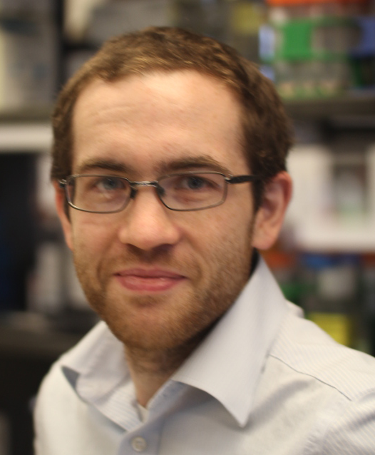
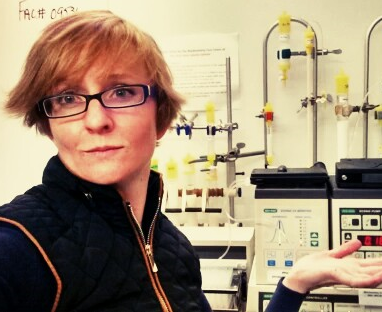

Welcome to the National Heart Lung & Blood Institute!
The Office of Education and the Fellows Advisory Committee welcome you as a future fellow in the Division of Intramural Research at the National Heart, Lung, and Blood Institute (NHLBI) of NIH.
As a Fellow, you will join a community of over 300 Postdoctoral Fellows whose research spans everything from molecular modeling to clinical studies. The Fellows Advisory Committee (FAC) has put together the following website with information for future fellows to help with your transition to the NIH. In addition we have a "buddy" system if you want to be in contact with a current Fellow. If you further questions, please contact rajiv.ramasawmy@nih.gov.
The information presented here is a quick introduction, made from what current postdoctoral fellows found helpful before starting here. For more specific cases and information, please consult the links provided or visit: https://www.training.nih.gov/assets/Moving_Guide.pdf
Herbert Geller
NHLBI Office of Education
Useful Info
Before You Arrive
For international Fellows who may not have a US credit or debit card upon arrival to the NIH, be sure to bring enough cash or get a travel cash card for the first few weeks of living costs. All Fellows should come prepared with approximately $5000 for the deposit and first month's rent, as housing can range from $1200-$3000 (see accommodation link) per month. Transferring money directly from internet services such as PayPal or TransferWise may be easier than carrying this much cash. Checks may be used in some situations.
Postdoctoral fellows receive a $2000 advance to help them with the first month, but that can take a couple of weeks to come through (contact your Administrative Officer, as this may be sent as a check). Predocs and Postbaccs do not typically get an advance but it is possible to request a $1,000 advance.
Personal insurance is provided, though not until some paperwork has gone through - so we recommend getting some travel insurance for the first few weeks.
Meet the fellows!
A few of our fellows describe their experience in coming to the NIH:
|



|
RajCardiovascular Interventions ProgramI'm a currently a second year postdoc, my research focuses on developing MRI to guide catheter cardiovascular interventions. I've learned a lot since arriving here, and the labs here at the NHLBI are a great place to do fun and novel research! The NIH is committed towards training postdocs on their next stage, and I warn you, the moment you set foot here everyone is asking where you're going next! I found this website a useful resource for considering scientific careers: http://myidp.sciencecareers.org/ Having completed my PhD in the UK, and never having visited DC before moving here - I was lucky to have a good friend already here who helped me settle in to the city, I found my apartment in Capitol Heights/ H-street corridor through Craigslist. It is really great to be so close to the centre of DC - which I enjoy cycling around using the bikeshare system https://www.capitalbikeshare.com/, and there are many bars, restaurants and shops within walking distance. It takes me approximately one hour door-to-door to commute using the Metro, which I'm quite used to from London! I love playing soccer, and through a series of NIH email listservs and meetup groups (https://www.meetup.com/) I've managed to find lots of games around DC and Maryland. Meetup is also a great way of seeing events around the city, including music and hiking. Lab website: https://ledermanlab.nhlbi.nih.gov/ LingCenter for Molecular MedicineI'm currently a research fellow in the Laboratory of Obesity and Metabolic Diseases. My research focuses on studying metabolic disorders that involve complex regulatory networks of protein coding genes and long non-coding RNAs (lncRNAs). My long-term goal is to translate my observations into novel therapeutic interventions for human diseases. NHLBI has a world class research environment and full of kind and supportive colleagues. I have had a great training experience in NHLBI, which has enabled me to get an NIH K22 grant (which is special to NHLBI) to startup my future lab, and I'm ready to move to my next step. Montgomery county is a beautiful place and you can find a nice apartment easily. I enjoyed my stay in Congressional Towers and Rollins Park. More than half of people live there are working in NIH! It takes me about 30-40 minutes door-to-door to commute using the metro, bike, or car. I'm a volunteer in the Chinese Student and Scholar Association at NIH (NIH-CSSA). The NIH-CSSA helps all Chinese fellows at the NIH with their research, career, and life. You can join NIH-CSSA mail list use your NIH email address through the following link: NIH-CHINESE-L or follow NIHCSSA (WeChat ID) using your WeChat account. AdamLaboratory of Molecular and Cellular ImagingI spent four years as a postdoctoral fellow in the Biochemistry and Biophysics Center before moving on to a data scientist position at Northrop Grumman in 2017. My research focused on better understanding the spatial organization and temporal dynamics of proteins and lipids regulating insulin secretion from beta cells. The resources here, both the equipment and technical expertise, are world-class. These resources, the ability to devote all your time to research, and career services from the NHLBI and OITE are some of reasons that the NHLBI is a great place to do postdoctoral research. I found my apartment in Silver Spring, MD through Craigslist. My commute is about 30 minutes by bicycle, predominantly on the Capital Crescent or Rock Creek trails, and its great! The network of bike paths and rail trails (find out more on www.waba.org) is one of my favorite things about living in this area. More generally Rock Creek Park in D.C. offers a surprisingly nice array of walking paths, hiking, and other outdoor activities that are very accessible from almost anywhere you'd want to live near the NIH. HeatherLabaoratory of Inflammation and Cardiometabolic DiseasesI am a third year postdoc and my research is focused on the role of neutrophils in early atherogenesis. My experience at the NIH has been a very exciting and unforgettable one that I thoroughly enjoy. I have found NHLBI to be a very collaborative environment, with an expert right around the corner no matter what topic you are interested in. There are more programs than I can count that offer training tools, classes, career development etc. How involved you want to be is really up to you. Additionally, my lab has become my second family, as we work hard, support each other and even spend time together outside of the laboratory setting. Outside of lab, I really enjoy running, biking and hiking, and it is nice because there are always people around you that love to do the same! BeverleyLaboratory of Cardiac EnergeticsI am a biochemist studying bioenergetic regulation, and I am in my third year of my second postdoc. I love being able to do innovative big-picture research here at the NHLBI, with access to the best technologies and experts on campus as well as through collaborations around the globe. As a trainee at the NIH, I have also taken advantage of the huge array of classes and career development opportunities, though the NHLBI Office of Education, the OITE, FAES, the NIH Library, and many more. When I arrived, I first lived in a house in Clarksburg that I found on Zillow and traveled about 45 min door-to-door with the RideOn commuter bus from a Park-n-Ride in Germantown. The house was very spacious, new, quiet, safe, and adjacent to a park with forest and a creek. Next, I moved to Van Ness in DC so that I could enjoy all the city has to offer, where I lived in a studio in a big apartment block, and traveled about 30 min door-to-door using the metro that I could walk to. Currently, I live in Bethesda in a group house, which I found on Craigslist, and get to walk or bike just 2 blocks to get to work. I am saving a bunch of money and there's never a dull moment sharing a house with three other young professionals! I had a much better time at the NIH after I made some friends, which started with going to the FelCom happy hours that I found out about from emails sent to the fellows listserve (FELLOW-L@LIST.NIH.GOV). They arrange various activities and so does the Visiting Fellows Advisory Council (see their Facebook page!). I try to do fun things in the city, get out into nature, work on creative hobbies, and have some "me time" as much as my work schedule allows, and I recommend you do the same for your sanity! |